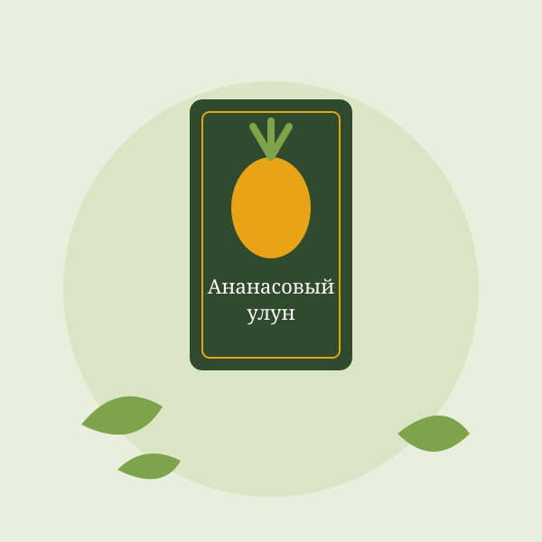

Ананасовый улун
Артикул: 01306
О чае
Светлый улун с сочным тропическим ароматом спелого ананаса и сладким послевкусием. Настой мягкий, без горечи — хорош и горячим, и холодным.
- Заваривание: 90–95 °C, 3–5 минут
- Можно заваривать 3–4 раза

Артикул: 01306
Светлый улун с сочным тропическим ароматом спелого ананаса и сладким послевкусием. Настой мягкий, без горечи — хорош и горячим, и холодным.